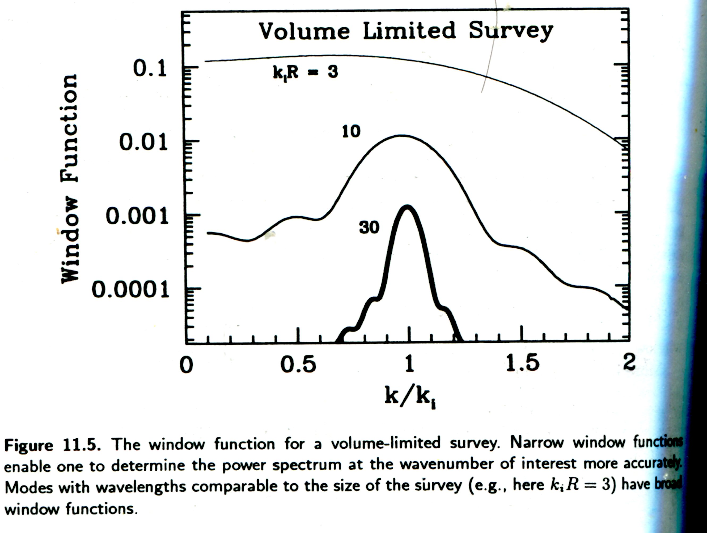
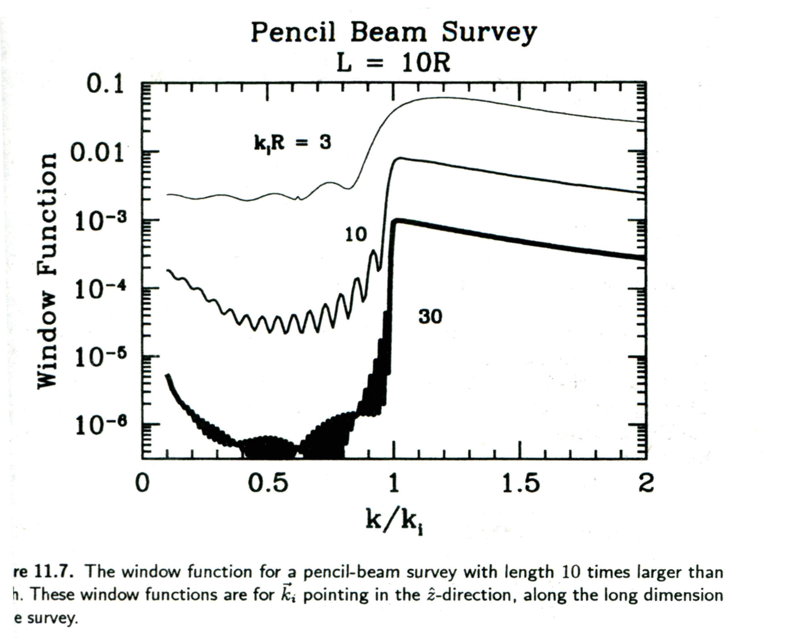

宇宙å¦ä¸çš„统计方法ã€�丙】
宇宙å¦ä¸çš„统计方法笔记系列，第三篇：Galaxy Survey ä¸çš„统计方法。
Contents
ç³»åˆ—æ–‡ç« ç›®å½•ï¼š
- 宇宙å¦ä¸çš„统计方法ã€�甲】
- 宇宙å¦ä¸çš„统计方法ã€�乙】
- 宇宙å¦ä¸çš„统计方法ã€�丙】
- 宇宙å¦ä¸çš„统计方法ã€�ä¸�】
ã€�乙】ä¸è®²åˆ°çš„是 CMB 的统计。CMB 是一个二维é�¢ä¸Šçš„è¿�ç»çš„温度场，而且是我们å�šäº†ç®€å�•çš„å�‡è®¾è¯´æ˜¯ Gaussian 分布的。Galaxy Survey è·Ÿ CMB 有很大的ä¸�å�Œï¼Œå®ƒæ˜¯ä¸‰ç»´ç©ºé—´ä¸çš„分立的星系分布，而且这里 Non-Gaussian 很é‡�è¦�。
Galaxy Survey 的数�
Galaxy survey æ˜¯è¿™æ ·è¿›è¡Œçš„ï¼šå…ˆæŠŠè¦�进行巡天的天空分æˆ�足够å°�的区域，æ¯�个å°�区域有足够多的星系用æ�¥ç»Ÿè®¡ã€‚然å��都æ¯�个区域进行计数，分别除以æ¯�个å°�区域的体积就是星系的数密度，平å�‡æ•°å¯†åº¦å°±æ˜¯æ€»æ˜Ÿç³»ä¸ªæ•°é™¤ä»¥æ€»ä½“积。
æ•°å¦ä¸Šï¼ŒTegmark æ��出了一个 galaxy survey ä¸çš„一个åƒ�ç´ ç‚¹ä¸Šçš„æ•°æ�®çš„定义
\begin{equation}
\Delta_i = \int\mathrm d^3x \psi_i(\vec x) \left[ \frac{n(\vec x) – \bar n(\vec x)}{\bar n(\vec x)} \right] \label{eqn-def-pixeldata}
\end{equation}
å…¶ä¸ \(n(\vec x)\) 是ä½�ç½® \(\vec x\) 处的星系数密度，\(\bar n(\vec x)\) 是平å�‡æ•°å¯†åº¦ï¼Œ\(\psi_i(\vec x)\) 是ä¸�å�Œçš„区域的æ�ƒé‡�。
对äº� \(\psi_i(\vec x)\) çš„é€‰æ‹©æ ¹æ�®æƒ…况而定，其ä¸æœ‰ä¸¤ç§�选择，分别是å®�空间里的和 Fourier 空间里的，
\[
\psi_i^{\text{CIC}}(\vec x) = \left\{
\begin{array}{ll}
\bar n(\vec x) &\mbox{if \(\vec x\) is in the \(i\)th sub-volume}\\
0 &\mbox{otherwise}
\end{array}
\right.
\]
这个��是说，在考虑�个点的数�的时候，仅仅考虑这个点上的星系分布，其他的点处的星系分布�会影�当��置的星系数密度。
而 Fourier 空间ä¸çš„写法是
\[
\psi_i^{\text{Fourier}}(\vec x) = \frac{e^{i\vec k_i \cdot \vec x}}{V}\left\{
\begin{array}{ll}
1 &\mbox{\(\vec x\) inside the survey volume} \\
0 &\mbox{\(\vec x\) outside survey volume}
\end{array}
\right.
\]
扩充两�情况的物�。 flag 1
Galaxy Survey çš„ likelihood
å› ä¸ºç»“æ�„å½¢æˆ�çš„ç�†è®ºæ¯”较å¤�æ�‚，星系的分布也是一个高度é��线性的体系。所以想è¦�写出一个简å�•çš„ likelihood 的表达å¼�是很难的。
定义 \(\Delta_i(\vec x)\) 为æŸ�个åƒ�ç´ ç‚¹çš„ fractional overdensity，这便是我们测é‡�çš„é‡�。物ç�†ä¸Šè®²ï¼Œæˆ‘们å�¯ä»¥çŸ¥é�“ \(\Delta_i(x)\) 的期望值应该是 0。我们å�¯ä»¥å®šä¹‰å‡ºä¸€ä¸ª covariance matrix
\[ \langle\Delta_i \Delta_j^*\rangle = (C_S)_{ij} + (C_N)_{ij} \]
这很�是 CMB 数�分�的情况。
Covariance Matrix
Galaxy survey � CMB ��的是，covariance matrix 更容易得到。
æ ¹æ�®å��é�¢çš„ç« èŠ‚è¡¥å…… covariance matrix çš„è�·å¾—ã€‚è¡¥å……æ— ä¿¡å�·çš„时候 \(\langle n^2(\vec x) \rangle\) ä¸� \({\bar n}^2\) 并ä¸�相ç‰ã€‚ flag 2
Window Function
如�把方程 (\ref{eqn-def-pixeldata}) �新写�
\[ \Delta_i = \int\mathrm d^3x \psi_i(\vec x) \delta(\vec x) \]
å�³é‡�定义了ä¸æ‹¬å�·é‡Œé�¢çš„部分。\(\delta(\vec x)\) 是 overdensity 。
如æ¤ï¼Œcovaricance matrix å�˜æˆ�了
\begin{eqnarray}
({\bf C_S})_{ij} &=& \langle \Delta_i\Delta_j \rangle \vert _{\text{no noise}} \nonumber\\
&=& \int \mathrm d x^3\mathrm dx’^3 \psi_i(\vec x) \psi_j(\vec x’) \langle \delta(\vec x) \delta(\vec x’)\rangle \nonumber\\
&=& \int \mathrm d x^3\mathrm dx’^3 \psi_i(\vec x) \psi_j(\vec x’) \xi(\vec x – \vec x’)\nonumber
\end{eqnarray}
å…¶ä¸åˆ©ç”¨äº†
\begin{equation}
\xi(\vec x -\vec x’) \equiv \langle \delta(\vec x)\delta(\vec x’) \rangle = \int \mathrm d^3 \frac{P(k)e^{i\vec k\cdot (\vec x – \vec x’)}}{(2\pi)^3} \label{eqn-def-corr-power}
\end{equation}
而这里的 \(x(\vec x – \vec x’)\) å®�际上是 correlation function。而 correlation function æ£å¥½ç”¨æ�¥å®šä¹‰ power spectrum，å�³æ–¹ç¨‹ (\ref{eqn-def-corr-power}) 第二个ç‰å�·ã€‚
\begin{eqnarray}
({\bf C_S})_{ij} &=& \int \mathrm d x^3\mathrm dx’^3 \int \frac{\mathrm d^3k}{2\pi}\frac{\mathrm d^3k’}{2\pi}\frac{\mathrm d^3k”}{2\pi} \tilde\psi_i(\vec k) \tilde\psi_j^*(\vec k’) P(k”) e^{i[\vec k+\vec l”]\cdot \vec x – i[\vec k’ + \vec k”]\cdot \vec x’} \nonumber\\
&=& \int \frac{\mathrm d^3k}{(2\pi)^3} P(k)\tilde \psi_i(\vec k) \tilde \psi_j^*(\vec k) \label{eqn-covmat}
\end{eqnarray}
分解 (\ref{eqn-covmat}) �为径�积分和立体角积分
\begin{eqnarray}
({\bf C_S})_{ij} &=& \int \frac{\mathrm dk}{k} \int \frac{\mathrm d\Omega_k}{4\pi} \frac{k^3 P(k)}{2\pi^2} \tilde \psi_i(\vec k) \tilde \psi_j^*(\vec k) \nonumber
\end{eqnarray}
è¿™æ ·å�¯ä»¥æŠŠç«‹ä½“角积分的部分就是 window function 了。
\[ W_{ij}(k) = \int \frac{\mathrm d\Omega_k}{4\pi} \tilde \psi_i(\vec k) \tilde \psi_j(\vec k) \]
ä»�这里å�¯ä»¥çœ‹åˆ° galaxy survey å’Œ CMB 的相似之处： Window function 上，都是 weighting function çš„ Fourier å�˜æ�¢çš„立体角积分，也就是立体角上的平å�‡å€¼ï¼Œè€Œå‰©ä½™çš„项都ä¸�æ–¹å�‘æ— å…³ã€‚
Volume-Limited Survey
这个例å�是我们的巡天是é™�制在å�Šå¾„为 \(R\) 的区域内，并且选用 Fourier pixel å½¢å¼�çš„ pixelization，那么 weighting function 在巡天范围之内å�¯ä»¥å†™æˆ�
\[\psi_i(\vec x) = \frac{e^{i\vec k_i \cdot \vec x}}{V} \]
� Fourier ��，得到
\[\tilde \psi_i(\vec x) = \int_{\vert x\vert <r } \mathrm d^3x \frac{e^{i\vec k_i \cdot \vec x}}{V} e^{-i\vec k \cdot \vec x} \]
积分
\[ \tilde \psi_i(\vec k) = \int x^2 \mathrm dx \int \mathrm d\Omega \frac{e^{i\vec k_i \cdot \vec x-i\vec k \cdot \vec x}}{V} = \frac{4\pi}{V\vert \vec k -\vec k_i\vert } \int _0^R \mathrm dx x\sin(\vert \vec k – \vec k_i\vert x) \]
最�
\[ \tilde \psi_i(\vec k) = \frac{4\pi}{V(\vert \vec k – \vec k_i \vert)^3} [ -\vert \vec k -\vec k_i \vert R \cos(\vert \vec k -\vec k_i \vert R) +\sin(\vert \vec k -\vec k_i \vert R) ] \]
�代�，\(y\equiv \vert \vec k -\vec k_i \vert R \) ，\(\mu = \cos \phi_{\vec k,\vec k_i}\)。然�将上�的 Fourier 空间的 weighting function 模方然��角平�，得到 window function
\[ W_{ii}(k) = \frac{(4\pi R^3)^2}{V^2} \int_{-1}^1 \frac{\mathrm d\mu}{2} \int_{0}^{2\pi} \frac{\mathrm d\phi}{2\pi} \frac{ (\sin y – y \cos y)^2 }{ y^6 } \\
=\frac{8\pi^2 R^6}{V^2} \int_{-1}^{1} \frac{\mathrm d\mu}{y^6}(\sin y – y \cos y)^2 \]
下�这个结�我没算，直��书上抄�的。 flag 3
最�利用 \(y\) 和 \(\mu\) 的关系�积分元，利用 \(V = 4\pi R^3 /3\)
\[ W_{ii} = \frac{9}{2k k_i R^2} \int_{\vert k – k_i\vert R}^{\vert k + k_i\vert R} \frac{\mathrm dy}{y} j_1^2(y) \]
这里出�了 Bessel 函数。
这个结æ�œå‘Šè¯‰æˆ‘ä»¬ä¸€ä¸ªå¾ˆè‡ªç„¶çš„ç»“è®ºï¼Œå› ä¸º Bessel 函数的å�Ÿå› ，window function 会在比较大的 \(k_i R\) 的情况下，å�˜å¾—很尖é”�，也就是说，最å��为 covariance matrix å�šè´¡çŒ®çš„，å�ªæœ‰ \(k = k_i\) 附近的那些模；相å��，如æ�œ \(k_i R\) 比较å°�，那么 window function çš„å±•å®½æ¯”è¾ƒå¤§ï¼Œè¿™æ ·å°±æ˜¯è¯´ï¼Œå¯¹äº�è¿™æ ·æƒ…å†µï¼Œcovariance matrix 的贡献æ�¥è‡ªäº�大多数模。
下é�¢æ˜¯åœ¨è¿™ç§�巡天ä¸ï¼Œå¯¹å…¶Covariance Matix çš„å‡ ç‚¹è®¨è®º
� window function，我们�以得到 covariance matrix。
具体过程暂略。flag 4
当 \(k_i R \gt 1\) 时，信� matrix 和 noise matrix 分别是
\[(C_S)_{ii}\sim \frac{P(k_i)}{V}\]
\[ (C_N)_{ii}=\frac{1}{\bar n V} \]
è¿™æ ·å¾—åˆ°ä¸€ä¸ªæ¯”è¾ƒé‡�è¦�的比值
\begin{equation}
\frac{ (C_S) } {(C_N) }\vert _{ii} \sim P(k_i) \bar n
\end{equation}
这个结�是说，为了能够看清信�，功�谱越大越好，数密度平�值越大越好。�际上，在比较�的尺度上，这个信�噪声比已�很�了。
è¿™ç§� window function çš„å‡ ä¸ªä¾‹å�å�¯ä»¥çœ‹å›¾ï¼š

对äº�大范围的 pixel，也就是å°�çš„ \(k_i\)ï¼Œå‡ ä¹�所有的模都会对我们的 covariance matrix 有影å“�，而对äº�å°�范围的，也就是大的 \(k_i\)，å�ªæœ‰æ�¥è¿‘ \(k_i\) çš„æ‰�会对 covariance matrix 有影å“�。
Pencil-Beam Survey
Pencil-Beam Survey å°±æ˜¯æ— å¹¿åº¦ä½†æ˜¯æœ‰æ·±åº¦çš„å·¡å¤©ï¼Œæ‰€æ�¢æµ‹çš„区域在 3D 上看æ�¥ï¼Œåƒ�支铅笔，故å��。
写æˆ�æ•°å¦å½¢å¼�，需è¦�用到 step function \(\Theta()\)，通过 step function 方法å�¯ä»¥æ�„é€ å‡ºåœ¨ä¸€ä¸ªåœ¨ \(z\) 在 \([-L/2,L/2]\) 内的圆柱体，具体形å¼�是
\[ \psi_i(\vec x) = \frac{1}{\pi R^2 L} \Theta (z+L/2)\Theta(L/2 -z)\Theta(R^2 – x^2 -y^2) \]
对äº�è¿™ç§�情况，我们å�Œæ ·å�¯ä»¥å†™å‡º weighting function çš„ Fourier å�˜æ�¢ï¼Œè®° \(\vec q = \vec k_i – \vec k\)。
\[ \tilde\psi_i(\vec k) = \int \frac{\mathrm d^3x}{\pi R^2 L}e^{i(\vec k_i – \vec k)\cdot \vec x} \Theta (z+L/2)\Theta(L/2 -z)\Theta(R^2 – x^2 -y^2) \]
这时候用柱å��æ ‡ï¼ˆç§¯åˆ†å…ƒ \(r\mathrm dr\mathrm d\theta\mathrm dz\)）比较方便，
\[\tilde \psi_i(\vec k) = \frac{1}{\pi R^2 L} \int_{-L/2}^{L/2}\mathrm d z e^{iq_z z} \int_{0}^{R}\mathrm dr r\int_0^{2\pi}\mathrm d\theta e^{iq_r r\cos\theta} \label{eqn-} \]
通过写出�个分�的积分上下�，��了 step function。
利用如下的积分技巧
\[ \int_0^\infty \mathrm dx x^{n-2} j_l^2(x) = 2^{n-4} \pi \frac{\Gamma(l+n/2 – 1/2)\Gamma(3-n)}{\Gamma(l+5/2-n/2)\Gamma^2(2-n/2)} \]
å…¶ä¸ \(\Gamma(z) = \int_0^{\infty} \mathrm dt t^{z-1}e^{-t}\)ã€‚è¿™æ ·å°±å�¯ä»¥æŠŠ weighting function 写æˆ� SphericalBesselJ 函数(\(j_n(z) = \sqrt{\pi/2} /\sqrt{z} J_{n+1/2}(z) \))å’Œ Bessel 函数(\(J_{n+1/2}\))çš„å½¢å¼�了。
\[ \tilde \psi_i(\vec k) = \frac{2}{R^2} j_0(q_z L/2)\int_0^R \mathrm dr r J_0(q_r r) \]
利用 \[ \frac{\mathrm d}{\mathrm dx}[xJ_1(x)] = x J_0(x) \] 把积分写出�
\[ \tilde \psi_i(\vec k) = \frac{2}{(q_r R)} j_0(q_zL/2) J_1(q_rR) \]
有了 Weighting function，就å�¯ä»¥æ¨¡ä»¿ä¹‹å‰�的方法计算 window function 了。Window function 的行为由 Bessel related functions æ�¥å†³å®šçš„。下图是ä»� Modern Cosmology 里é�¢æˆªå�–出æ�¥çš„ä¸€å¼ å›¾ã€‚å›¾ä¸ç”¨æ˜¯å½“ \(q_r = 0\) 的特殊情况。

跟之å‰�的情况ä¸�å�Œçš„是，ç�°åœ¨å¯¹äº�大范围的 pixel （å°�\(k_i R\)）æ�¥è¯´ï¼Œå‡ ä¹�所有的模都对 covariance matix 起作用，这ä¸�上é�¢çš„ç�ƒå½¢çš„ volume-limited survey æ˜¯ä¸€æ ·çš„ï¼Œä½†æ˜¯å¯¹äº�å°�范围的 pixel （大\(k_i R\)）æ�¥è¯´ï¼Œ\(k\lt k_i\) 大的模都会 covariance matrix 起作用，而之å‰�çš„ volume-limited survey å�´æ˜¯å�ªæœ‰ \(k\approx k_i\) 的模æ‰�会对 covariance matrix 有贡献，å�Ÿå› 就在äº� pencil-beam 是长æ�¡çŠ¶çš„，而 window function 是è¦�对所有三个方å�‘的模分é‡�æ�¥å¹³å�‡çš„。在图ä¸æ‰€ç¤ºçš„情况下（\(q_r = 0\)），如æ�œæ˜¯è¦�å�– \(q_r\) å’Œ \(q_z\) çš„å¹³å�‡ç„¶å��é™�制其大å°�在 \(q_{\text{limit}}\) 内，自然 \(q_z\) 会比 \(q_{\text{limit}}\) 大多了。所以å�³ä½¿å¯¹äº�较大的 \(k_i R\) 会有一些比 \(k \lt k_i\) 的模贡献进æ�¥ã€‚
本文共有 4 个 flag。请仔细检阅并消除所有 flag。

最近评论